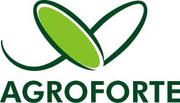

Oi! Tudo bem? 🌾✨ Eu sou a Vitória, tô no primeiro ano do ensino médio e, juro, ultimamente ando brilhando nas aulas de Geografia e Biologia porque decidi entender de verdade o que tá acontecendo no quintal da nossa casa. Moro aqui no Paraná e, conversando com os meus avós e vendo os jornais, percebi uma coisa bizarra: o nosso estado é gigante quando o assunto é produzir comida! Criei essa página para o meu projeto de Atualidades da escola, e queria muito te mostrar como o nosso agro é forte, mas do jeito certo — olhando para as pessoas, para a tecnologia e para o futuro. Vem dar uma olhada!
Se você mora aqui ou já viajou pelo nosso estado, com certeza já viu aquela terra vermelha maravilhosa ou os campos infinitos de soja, milho e trigo sumindo no horizonte. O Paraná não é só um estado bonito; a gente ajuda a alimentar o mundo!
Não é sorte, é química, geografia e muito trabalho duro. O nosso solo (aquela terra roxa famosíssima) é super fértil, o clima ajuda muito e, o mais importante: o paranaense sabe trabalhar em equipe. Aqui, o modelo de cooperativismo mudou tudo. Em vez de cada um por si, os pequenos e grandes produtores se juntam para comprar sementes, usar tecnologias e vender o que plantam. É o verdadeiro "a união faz a força", só que no campo!
Para você ter uma ideia do nosso poder, se o Paraná fosse um país, a gente ia desbancar muita gente por aí. Olha só os nossos destaques:
* A Rainha Soja: É o nosso ouro verde. O Paraná disputa o topo da produção nacional ano após ano.
* Frangos e Proteínas: Sabia que o Paraná é o maior exportador de carne de frango do Brasil? A cada quatro frangos exportados pelo país, um sai daqui. É muita asa e coxinha viajando o mundo, gente!
* Leite e Diversidade: Da região de Castro até o oeste do estado, a nossa produção de leite é super tecnológica. Além disso, somos fortes no milho, no trigo e até na piscicultura (criação de peixes).
Se você acha que agro é só uma pessoa com uma enxada na mão sob o sol... caramba, você está muito desatualizado (eu também estava!). Hoje, o campo aqui no Paraná parece um filme de ficção científica.
* Drones no Céu: Eles sobrevoam as plantações para ver exatamente onde precisa de água ou onde tem alguma praga, economizando tempo e recursos.
* Tratores que Dirigem Sozinhos: Sim! GPS e inteligência artificial controlam máquinas gigantescas para que o plantio seja perfeito, sem desperdiçar nenhuma sementinha.
* Ciência no Solo: Análises de laboratório super complexas ajudam o agricultor a saber exatamente o que a terra precisa.
De tudo o que estudei para esse projeto, o que mais me tocou foi ver o lado humano. O agro forte do Paraná não existiria sem as famílias. Atrás daquela tecnologia toda, tem o seu João, a dona Maria, a filha deles que fez faculdade de Agronomia e voltou para ajudar os pais... É uma história de geração para geração. O amor que o produtor paranaense tem pela terra é algo que a gente consegue sentir na qualidade do que chega na nossa mesa todo santo dia. "Preservar a terra não é só cuidar do negócio, é cuidar do futuro dos meus netos." — Seu Antenor, produtor de milho em Cascavel.
Essa é a minha parte favorita e a que eu mais cobrei no meu trabalho da escola. Não adianta produzir muito se destruir o planeta, né? Felizmente, o Paraná é pioneiro em técnicas como o Plantio Direto (que protege o solo contra a erosão) e o uso de energias renováveis, como o biogás feito a partir de resíduos da própria produção. Dá para ser gigante e respeitar a natureza ao mesmo tempo!.
E aí, o que você achou do meu projeto? Se tiver alguma dúvida ou quiser acrescentar algo que você sabe sobre a sua região, deixa nos comentários! Vamos fazer esse conhecimento circular!